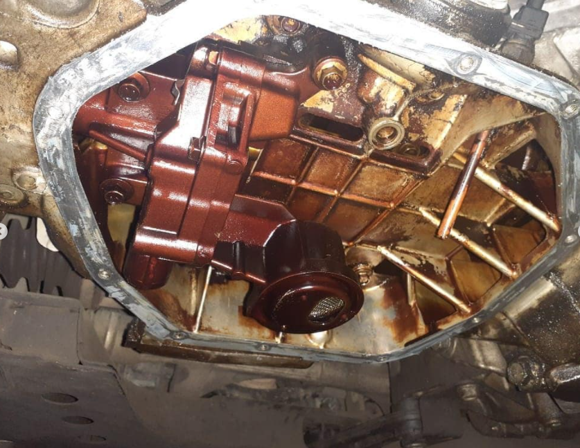

Se realizó un trabajo de distribución completa, service de fluidos y reparamos el sistema de calefacción.
El mismo llegó con poca presión de aceite. A causa de no realizarse los cambios de aceite a tiempo se obstruyó demasiado la lubricación causando un desgaste prematuro de cadenas, poleas y patines de distribución.
Solucionamos pérdidas de aceite , service completo (aceite ,filtro de aceite, aire, combustible y habitáculo)
Reemplazamos el líquido por refrigerante y anticongelante de calidad original.
Reemplazamos la resistencia del forzador de calefacción y aire acondicionado
